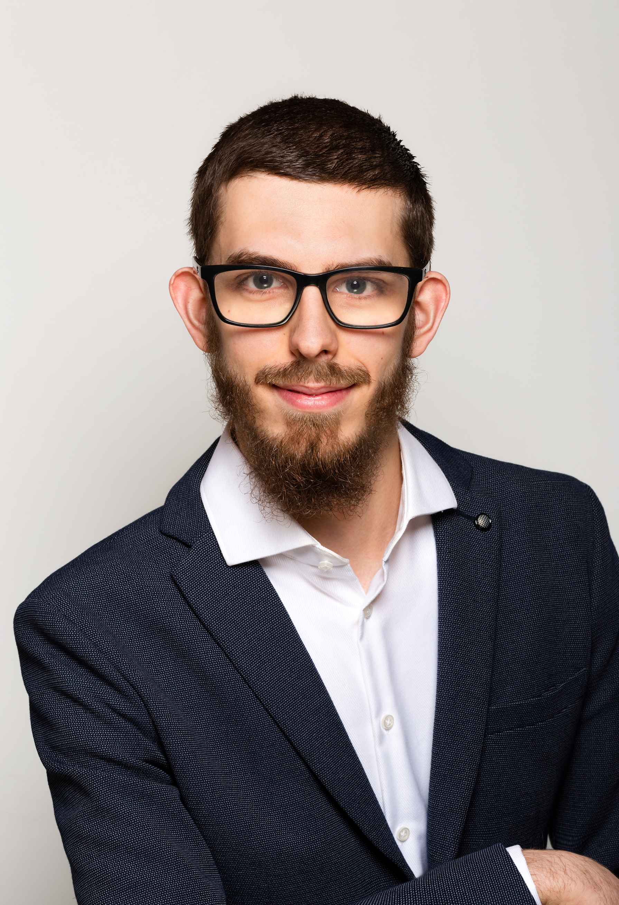

I'm Dr. Amin Ranem, a computer scientist in the Mathematics of Imaging & AI group at the University of Twente. I develop risk prediction models for vascular risk prediction in the AI4EVAR project and research continual learning for medical image analysis. My work resulted in 13 publications at venues including CVPR, WACV, MICCAI and in Nature Scientific Reports.

I am a Postdoctoral Researcher in the Mathematics of Imaging & AI group at the University of Twente, where I design and develop the AI-based risk prediction models in AI4EVAR, a Dutch multi-center project that personalizes the treatment and follow-up of abdominal aortic aneurysms.
I received my Ph.D. in Computer Science from TU Darmstadt in 2025 with the thesis "Beyond End-to-End — Exploring Extremes in Medical Continual Learning", supervised at the MEC-Lab by Dr. Anirban Mukhopadhyay. My doctoral research explored how segmentation models can keep learning as clinical data shifts. Along the way I worked with transformers, atlas-based methods, Neural Cellular Automata and foundation models like SAM.
Alongside my research, I played a key role in quality assurance for RACOON, Germany's nationwide radiology AI infrastructure connecting 38 university hospitals, and worked on regulatory aspects of continually learning medical software (FDA PCCP). I care deeply about the community side of science: I served on the MICCAI Student Board as Professional Events Officer until 2025 and still co-organize workshops such as DGM4MICCAI and the Data-Centric Dynamic Learning tutorial.
What keeps me in this field is the gap between a good paper and a model a hospital can rely on. Closing that gap takes clean PyTorch code, honest validation and answers a regulator will accept.
Optimizing treatment, patient information and follow-up of abdominal aortic aneurysms across a Dutch clinical–academic consortium.
Every year, around 3,000 abdominal aortic aneurysms in the Netherlands are treated with EndoVascular Aneurysm Repair (EVAR). The procedure is safer up front than open surgery, but 1 in 5 patients needs a re-intervention within five years. Every patient faces lifelong annual imaging, and for most of them it turns out to be unnecessary.
As a postdoctoral researcher on the project, I design, implement and train its two prediction models. They are multi-modal models that combine structured clinical data with CTA imaging, trained on the RADAR database of over 1,000 EVAR patients. The models also embed explainable AI (XAI) modules to provide clinicians with full transparency into how clinical and imaging inputs drive each prediction.
Both models will be tested in a prospective clinical study with around 300 patients across three hospitals. Their outputs feed the project's shared decision tools, from 3D prints and holograms to clinical software, so surgeons and patients can decide on treatment and follow-up together.
Predicts the 5-year re-intervention risk of an intended operative plan from preoperative imaging and clinical data. Surgeons can then adjust the stent graft choice or add adjunctive measures before the first incision.
Extends the first model with procedural and 30-day postoperative data to stratify follow-up: strict surveillance for high-risk patients, far fewer hospital visits for the 60–80% who remain complication-free.
Fewer unnecessary scans and visits, lower costs, and predictions patients can actually understand. The tools that carry these predictions are tested with the Harteraad patient panel.
Fusing structured clinical data with CTA imaging into complex predictive systems for vascular risk prediction and EVAR planning.
Segmentation models that keep learning as scanners, protocols and populations shift, without forgetting what they already know.
Robust CT and MRI segmentation across anatomies such as hippocampus, prostate and heart, plus adapting foundation models like SAM to medicine.
Quality assurance at national scale (RACOON), explainability, and regulatory pathways for continually learning medical software (FDA PCCP).
Making multi-modal decisions transparent: Showing clinicians how clinical and imaging factors shape each risk prediction.
Lightweight, self-organizing models for segmentation and registration, ranging from NCAdapt to NCA-Morph, even trainable on edge devices.
TU Darmstadt · "Beyond End-to-End — Exploring Extremes in Medical Continual Learning"
TU Darmstadt · "Continual Learning with Transformer Architectures"
Saarland University · "Development of an evaluation tool for time-series analysis of passenger forecasts"
13 peer-reviewed publications, including first-author papers at CVPR, WACV, BMVC and MIDL. Full list is on Google Scholar.
"NCA-Morph: Medical Image Registration with Neural Cellular Automata"
"Continual Learning with UnCLe SAM"
"Exploring the extremes of medical continual learning"
"Beyond E2E continual segmentation"
I organized the Academia & Industry event, an evening of panels and networking that brought researchers and industry people into the same room.